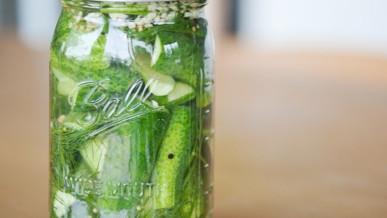

Claussen Pickles Recipe

Easy at home Claussen pickles
Make your own Classen like pickles at home!
Ingredients
Steps
- Combine the water, vinegar and salt and bring it to a boil.
- Put the spices and cucumbers in quart jars.
- Pour the brine mixture over the cucumbers and spices in the jars and seal.
- Put them in the refrigerator: Ready in 7-10 days. Keeps 8 - 19 weeks.
- Brine can be re used.
- This recipe can be multiplied by keeping these proportions: 3 parts water, 1 part vinegar and the spices are for a quart jar.